BrainGate Data Visualization
An interactive data visualization for a neuroscience research group.
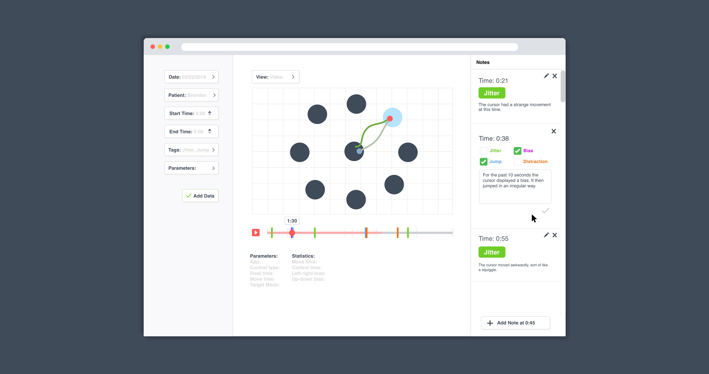Background
Overview: BrainGate, is a technology that allows patients to control computer interfaces with their brains and is developed at Brown University. I worked with a team of Computer Science students at Brown to design and develop an interactive data visualization tool for the BrainGate researchers. BrainGate seeks to restore the independence of people affected by various neurologic diseases. While patients use BrainGate technology, researchers collect data on the patients’ cursor movements and clicks. In order to improve their technology, the researchers needed an intuitive way to visualize and analyze the data they collect. This project was done as a freelance project as part of a Computer Science class at Brown titled “Creating Modern Web Applications.”
Here is a quick video summarizing BrainGate's technology
Tools: Github, Sketch, Principle, Illustrator, Google drive, pens and paper, whiteboards, Sublime
Team:
Jean: Front End Developer
Marcin: Back End Developer
Zhengyi: Front End Developer

Sophia (me!): Experience Designer
Process Summary:

Original Problem Statement
Our client, the BrainGate engineering team, needed a way for the BrainGate researchers to visualize their data.
(Before this project BrainGate researchers had no real way to visualize the data).
User Research
Understanding the BrainGate Researchers
Interviews: We interviewed our users to learn about their jobs, the tools they use and their day-to-day experiences. This project is very unique in that we have a very small and specific user group that could quickly give us feedback and who could continue to improve their program as they used it.
A summary of what we learned:
- The BrainGate researchers observe the patients and collect a lot of numerical data.
- They collect data on the movement of the cursor over time and how accurate the participant was with the cursor.
- They take qualitative notes on their sessions with the patients in Word documents (separate from the numerical data).
- The researchers want to be able to visualize this data, instead of trying to compare or analyze numbers.
- The researchers want to troubleshoot the BrainGate system by comparing the results of different settings and visualizing the data collected after each session.
- They need help sorting and organizing the data.
New Problem Statement
The BrainGate researchers need a way to organize their data, visualize patient cursor movements overtime and annotate data based on their observations.
Before this project, the BrainGate researchers had no real way to visualize the data other than just noting data coordinates, time stamps and what was provided to them in MatLab. They also collected notes in Word documents and recorded things like “at 0:45 seconds someone made a loud noise in the background and caused a distraction.” The notes were disconnected from the data points. All of their data was stored in MatLab files and not in a database.
Ideation and Wireframing
Improving based on user feedback
Each time I met with the BrainGate team I got feedback on the wireframes and continued to iterate. See the mockups section for descriptions of design decisions and the functions of the data visualization.
Mockups
Loading data into the program with filters
A user selects the set of data that they would like to view through filters. In this GIF, the user selects the date that the data was collected on.
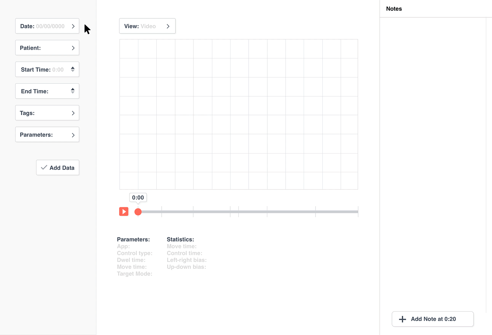Other filters that the user can use to select a set of data are the patient's name, tags, parameters and start and end time of the data.
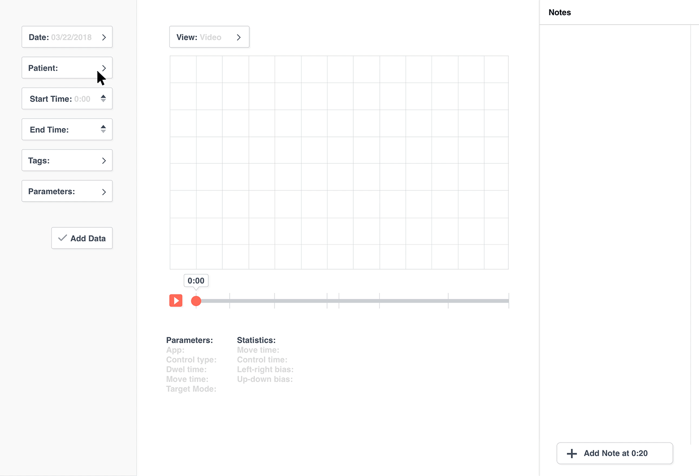Once the data set is selected, the researcher can view the data in the graph section.
In these mockups, the user is viewing a set of data where a patient is playing a "game" to move their cursor to the light blue targets. In the future, any cursor data (not just game data) could be analyzed using this program.
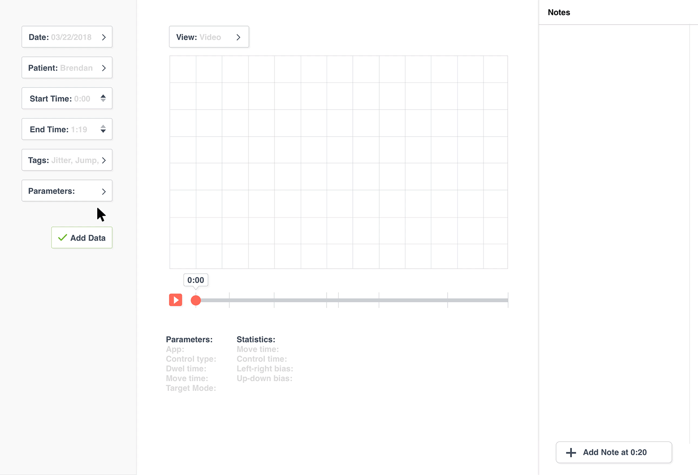Viewing X, Y coordinates over time
The red dot is the “current” X and Y location of the patient’s cursor. A light green line shows the past of the cursor’s pathway and the dark green line shows the future of the cursor's pathway.
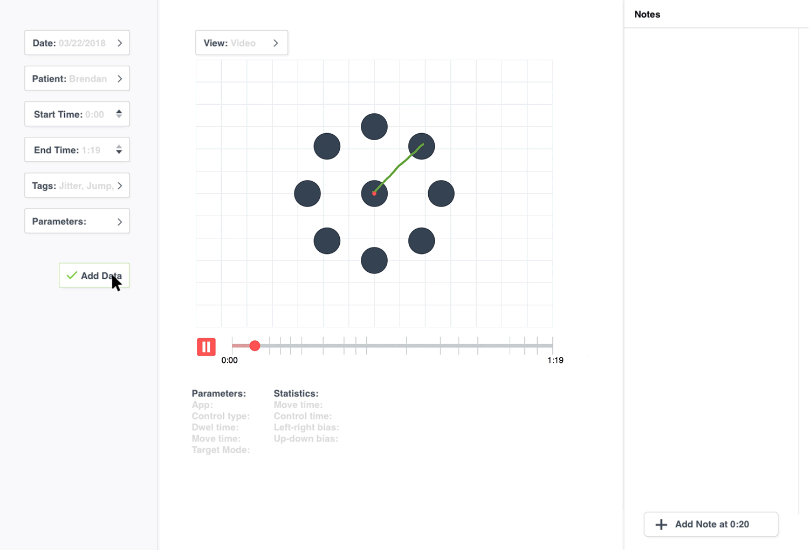The future and past positions of the cursor
There is also a “full view” where the researchers can view all of the cursor movements for the entire session with the patient.
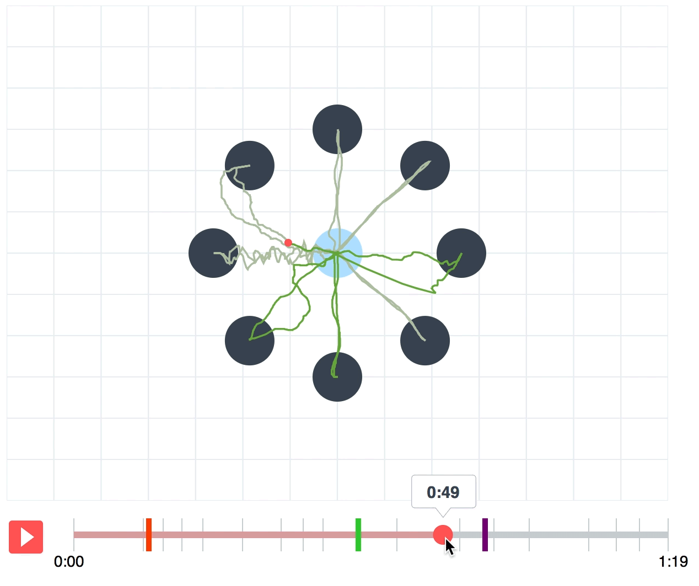Adding a note
The user can annotate the data by adding notes at specific times. For example, if a researcher sees a cursor jump at 0:20 seconds, they can add a note at that time with the tag “jump”. A indication of this note will appear on the timeline.
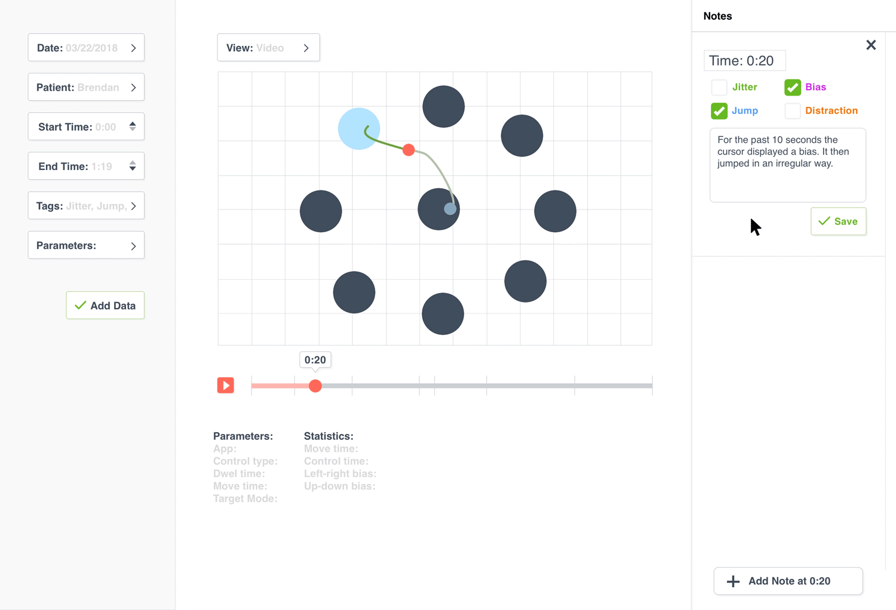If a user hovers over one of the notes they will see a preview on the timeline at the time that the note was taken. If a user clicks on one of the notes it takes them to the time the note was taken on the timeline and graph.
Selecting a note
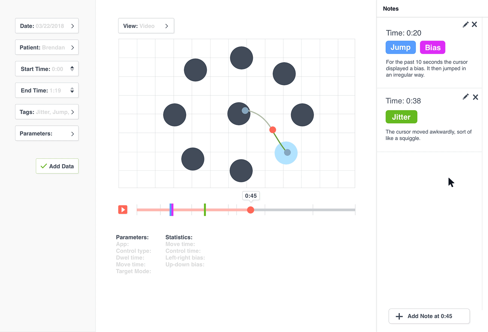If the user hovers over a timeline marker then the note is lightly highlighted and if the user clicks on the timeline marker then the note is highlighted. They can also see a preview of the graph at that time by hovering.
Using the timeline
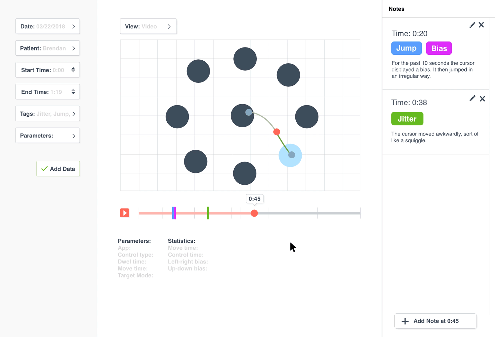One of the biggest challenges was visualizing X and Y coordinates over time. I used inspiration from YouTube as well as other video and music players to design a timeline that the researchers could use to play through or scrub through the “recording” of each session. The timeline includes markers to show that a note was added at a specific time.
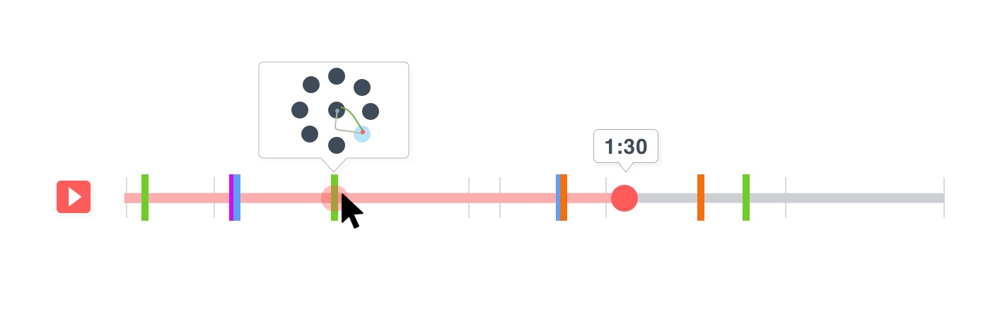 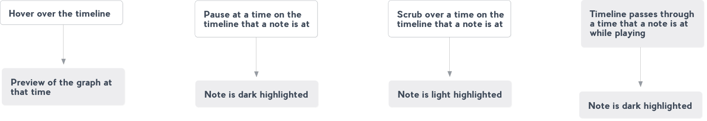Prototype
We built a working prototype of this program. It was a great learning experience to work with a team of engineers to actually build something that I designed. We used a local MongoDB database (with our data converted to JSON from the Matlab files), svg.js library for the graph and timeline and RESTful API to load the data into the program.
Read more about the design of the program here.
If you are interested in looking at our documentation for this project, send me a message.
Reflection
The clients and researchers gave very positive feedback to our final presentation of our prototype. It was very rewarding to see that something I worked on would help hardworking researchers make a positive impact in patients’ lives. It was a great learning experience to work with a client, a group of users as well as a team of engineers. I learned about understanding users’ needs, asking good questions, designing a creative experience, communicating my design decisions to clients and engineers and web app technologies. This project will be a memorable one because of the awesome people that I worked with and because the project will help in BrainGate’s mission to give patients with neurological disorders more independence.